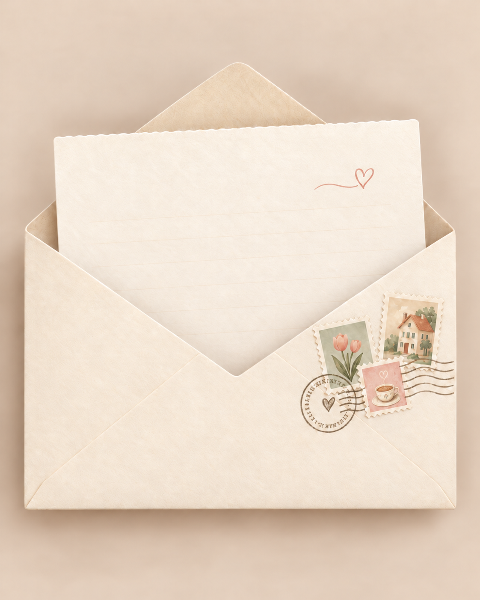

HEART MAILBOX
心动信箱
抽一封信，回答一个问题。它不是考试，而是让两个人慢慢看见真实彼此的一次邀请。
开始之前，先做一个小小约定
这些问题没有标准答案，也不是为了证明谁更正确。真正重要的是，当彼此给出不同答案时，我们仍然愿意认真倾听、温柔理解，并尊重对方的边界。
先听完，再回应不急着打断、解释或反驳，先让对方把话说完整。
带着好奇靠近不假设自己已经完全了解，而是愿意重新认识眼前这个具体的人。
表达感受，不攻击可以坦诚分享失落、难过和期待，但不把表达变成指责。
允许跳过问题每个人都可以决定自己愿意分享多少，以及以怎样的节奏靠近。
OPEN A LETTER
心动信箱
每次只打开一封信。读完以后，可以先停一会儿，再开始回答。
